03 - Classification example using tensorflow
Pablo Morala
2023-07-14
nn2poly-03-tensorflow-classification.RmdThis vignette’s goal
After showing how to use nn2poly in its default version
in vignette("nn2poly-01-introduction"), here we will
present how to use specific methods related to keras and
tensorflow that allow for an easier and smoother use of
nn2poly with that deep learning framework. Furthermore, we
will sow how to impose the needed weight constraints in
tensorflow during training to have accurate results and
compare those results with an unconstrained neural network.
In this vignette we will focus on a simple classification example
using the iris dataset. A regression one is covered in
vignette("nn2poly-02-tensorflow-regression").
library(nn2poly)
library(keras)
# This sets all needed seeds
tensorflow::set_random_seed(1)Simple classification example
Data preparation
First we load the iris dataset and scale the data to the
\([-1,1]\) interval:
# Load the data
data(iris)
# Change response to numeric. In this case, Species was already numeric,
# but this step is needed if it is a factor variable.
iris$Species <- as.numeric(iris$Species)
# Define dimension p (number of predictor variables)
p <- dim(iris)[2] - 1
# Define objective classes
n_class <- max(iris[,(p+1)])
# Move objective classes from (1:3) to (0:2), needed for tensorflow
iris[,(p+1)] <- iris[,(p+1)] - 1
# Scale the data in the [-1,1] interval and separate train and test
# Only the predictor variables are scaled, not the response as those will be
# the different classes.
iris_x <- iris[,-(p+1)]
maxs <- apply(iris_x, 2, max)
mins <- apply(iris_x, 2, min)
data_x_scaled <- as.data.frame(scale(iris_x, center = mins + (maxs - mins) / 2, scale = (maxs - mins) / 2))
data <- cbind(data_x_scaled, iris[,(p+1)])
# Divide in train (0.75) and test (0.25)
index <- sample(1:nrow(data), round(0.75 * nrow(data)))
train <- data[index, ]
test <- data[-index, ]
train_x <- as.matrix(train[,-(p+1)])
train_y <- as.matrix(train[,(p+1)])
test_x <- as.matrix(test[,-(p+1)])
test_y <- as.matrix(test[,(p+1)])Original neural networks
We will build and train two different neural networks (NNs), one with
unconstrained weights (nn1) and another one imposing a
constraint on the weights (nn2).
Different constraints can be tested, but the suggested constraint based on our theoretical and empirical evaluation is to use the L1 norm equal to 1, constraining each vector of weights + bias arriving to a neuron to satisfy that their L1 norm is equal or less than 1.
Build NN 1, unconstrained
First, we build the model. Note that in this case the NN has a linear
output with the same number of neurons as the number of classes to
predict (3 species, n_class). Then, the linear output will
be transformed in a probability to find the most probable class but this
step is done after training. Therefore, nn2poly will be used to obtain a
polynomial that approximates this nn with linear outputs and then its
results will also be transformed in probabilities to predict the highest
probability class.
This NN will be built using standard tensorflow and keras practices, in this case with a sequential keras model without any constraint on the weights.
nn1 <- keras_model_sequential()
nn1 %>% layer_dense(units = 100,
activation = "tanh",
input_shape = p)
nn1 %>% layer_dense(units = 100,
activation = "tanh")
nn1 %>% layer_dense(units = n_class)
nn1
#> Model: "sequential_3"
#> ________________________________________________________________________________________________________________________
#> Layer (type) Output Shape Param #
#> ========================================================================================================================
#> dense_8 (Dense) (None, 100) 500
#> dense_9 (Dense) (None, 100) 10100
#> dense_10 (Dense) (None, 3) 303
#> ========================================================================================================================
#> Total params: 10,903
#> Trainable params: 10,903
#> Non-trainable params: 0
#> ________________________________________________________________________________________________________________________Build NN 2, constrained
In order to implement the desired constraints, we provide the
add_constraints() function, that takes the structure of a
given NN (has to be a feed forward dense NN) and modifies its layers to
include the constraints. This is needed because default constraints
implemented in keras do not support to impose a constraint
at the same time on the weights and the bias and have to be combined
with a custom layer.
Our implementation is such that the bias on each neuron is included in the weights vector incident on that neuron, meaning that if the previous layer had \(h\) neurons, then the considered weight vector including the bias at a given neuron would have dimension \(h+1\), having the bias as it first element. Currently, L1 norm and L2 norm equal to 1 are implemented as options.
Note that L1 norm equal to 1 when scaling the input data to the \([-1,1]\) interval is the recommended option.
nn2 <- add_constraints(nn1, constraint_type = "l1_norm")
nn2
#> Model: "sequential_4"
#> ________________________________________________________________________________________________________________________
#> Layer (type) Output Shape Param #
#> ========================================================================================================================
#> layer__combined_l1_3 (Layer_Combined_L1) (None, 100) 500
#> layer__combined_l1_4 (Layer_Combined_L1) (None, 100) 10100
#> dense_11 (Dense) (None, 3) 303
#> ========================================================================================================================
#> Total params: 10,903
#> Trainable params: 10,903
#> Non-trainable params: 0
#> ________________________________________________________________________________________________________________________Note how the parameters and structure are the same, but the layer type has been modified.
Compile and train both NNs
After building both NNs, we compile and train both of them. Note
that, as constraining the weights has trade-off in the learning speed of
the NN, the nn2 needs a higher number of epochs to properly
learn from the data.
In this case, we need to define a categorical crossentropy loss and use the accuracy as the chosen metric.
Compile and train nn1 the model, and visualize it:
compile(nn1,
loss = loss_sparse_categorical_crossentropy(from_logits = TRUE),
optimizer = optimizer_adam(),
metrics = "accuracy")
history1 <- fit(nn1,
train_x,
train_y,
verbose = 0,
epochs = 200,
validation_split = 0.3
)
plot(history1)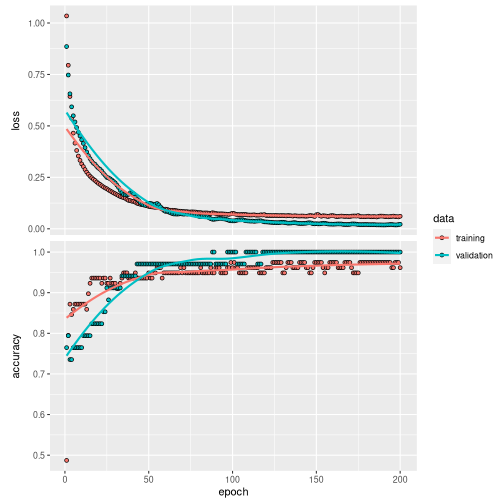
Compile and train nn2 the model, and visualize it:
compile(nn2,
loss = loss_sparse_categorical_crossentropy(from_logits = TRUE),
optimizer = optimizer_adam(),
metrics = "accuracy")
history2 <- fit(nn2,
train_x,
train_y,
verbose = 0,
epochs = 300,
validation_split = 0.3
)
plot(history2)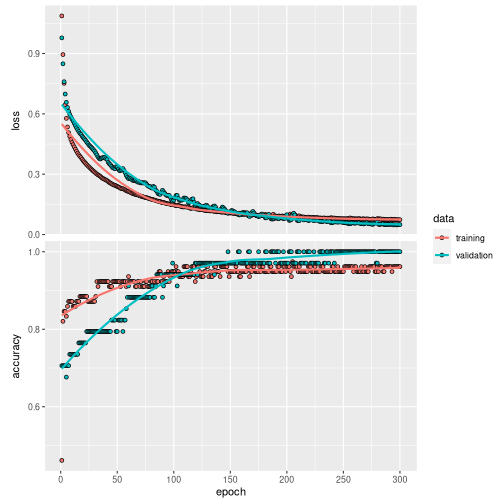
Obtain the predicionts
In this case, to asses the NNs accuracy we have to transform their output into a probability:
probability_model1 <- keras_model_sequential() %>%
nn1() %>%
layer_activation_softmax() %>%
layer_lambda(k_argmax)
probability_model2 <- keras_model_sequential() %>%
nn2() %>%
layer_activation_softmax() %>%
layer_lambda(k_argmax)And predict the results with the test data for each neural network. (We also predict and store the linear response of the NNs to be compared later with the polynomial output)
Visualize the NNs results:
We can use here a confusion matrix to visualize the results, where we can see that both NNs correctly predicts almost all of the classes in the test data:
# Create a confusion matrix
cm1 <- caret::confusionMatrix(as.factor(prediction_NN_class1), as.factor(test_y))
cm1
#> Confusion Matrix and Statistics
#>
#> Reference
#> Prediction 0 1 2
#> 0 13 0 0
#> 1 0 14 2
#> 2 0 0 9
#>
#> Overall Statistics
#>
#> Accuracy : 0.9474
#> 95% CI : (0.8225, 0.9936)
#> No Information Rate : 0.3684
#> P-Value [Acc > NIR] : 7.078e-14
#>
#> Kappa : 0.9202
#>
#> Mcnemar's Test P-Value : NA
#>
#> Statistics by Class:
#>
#> Class: 0 Class: 1 Class: 2
#> Sensitivity 1.0000 1.0000 0.8182
#> Specificity 1.0000 0.9167 1.0000
#> Pos Pred Value 1.0000 0.8750 1.0000
#> Neg Pred Value 1.0000 1.0000 0.9310
#> Prevalence 0.3421 0.3684 0.2895
#> Detection Rate 0.3421 0.3684 0.2368
#> Detection Prevalence 0.3421 0.4211 0.2368
#> Balanced Accuracy 1.0000 0.9583 0.9091
# Create a confusion matrix
cm2 <- caret::confusionMatrix(as.factor(prediction_NN_class2), as.factor(test_y))
cm2
#> Confusion Matrix and Statistics
#>
#> Reference
#> Prediction 0 1 2
#> 0 13 0 0
#> 1 0 14 3
#> 2 0 0 8
#>
#> Overall Statistics
#>
#> Accuracy : 0.9211
#> 95% CI : (0.7862, 0.9834)
#> No Information Rate : 0.3684
#> P-Value [Acc > NIR] : 1.482e-12
#>
#> Kappa : 0.8799
#>
#> Mcnemar's Test P-Value : NA
#>
#> Statistics by Class:
#>
#> Class: 0 Class: 1 Class: 2
#> Sensitivity 1.0000 1.0000 0.7273
#> Specificity 1.0000 0.8750 1.0000
#> Pos Pred Value 1.0000 0.8235 1.0000
#> Neg Pred Value 1.0000 1.0000 0.9000
#> Prevalence 0.3421 0.3684 0.2895
#> Detection Rate 0.3421 0.3684 0.2105
#> Detection Prevalence 0.3421 0.4474 0.2105
#> Balanced Accuracy 1.0000 0.9375 0.8636Using nn2poly to obtain the polynomial
After the NNs have been trained, we can directly call
nn2poly on the keras model. Therefore, we do
not need to build an object with weights and activation functions as in
the default case covered in
vignette("nn2poly-01-introduction"), and can benefit from
the generic methods implemented for keras models.
The only parameters that have to be added for nn2poly to work is the
Taylor order expansion at each layer (q_taylor_vector),
where we will choose 8 by default on non linear layers and 1 in the last
linear layer as Taylor is not used there. (The final polynomial order
will be limited by forced_max_Q=3)
Note that in this case, as we have 3 output neurons, there will be 3 output polynomials. The polynomials will be stored in the same way as in the regression case, in a list with labels and values, but in this case the values will be a matrix instead of a vector, where each row will be the polynomial obtained for each output neuron.
We will do this for both neural networks and compare the results:
Obtaining polynomial predictions
As said before, the obtained polynomial represents the neural network
before including the softmax function and computing the class assigned
to each observation. Then, we need to define again a keras sequential
model that includes the class computation from the polynomial output.
This polynomial output is obtained with eval_poly(), in
this case in matrix form, as the 3 polynomials are evaluated at the same
time:
# Obtain the predicted values for the test data with our Polynomial Regression
prediction_poly_matrix1 <- eval_poly(x = test_x, poly = final_poly1)
# Define probability model with keras fro the polynomial outputs
probability_poly1 <- keras_model_sequential() %>%
layer_activation_softmax() %>%
layer_lambda(k_argmax)
# Class prediction with the polynomial outputs
prediction_poly_class1 <- predict(probability_poly1,t(prediction_poly_matrix1))
# Obtain the predicted values for the test data with our Polynomial Regression
prediction_poly_matrix2 <- eval_poly(x = test_x, poly = final_poly2)
# Define probability model with keras fro the polynomial outputs
probability_poly2 <- keras_model_sequential() %>%
layer_activation_softmax() %>%
layer_lambda(k_argmax)
# Class prediction with the polynomial outputs
prediction_poly_class2 <- predict(probability_poly2,t(prediction_poly_matrix2))Visualizing the results
With the polynomial predictions, there are two options. We can
represent in a diagonal line the linear outputs obtained directly from
the polynomial and NN predictions, or compare the assigned classes after
employing the probability models. Please note here that we compare the
predictions (linear and classes) of the polynomials with the NN
predictions and not the original data, as nn2poly’s goal is
to faithfully represent the NN behavior independently of how well the NN
predicts.
First, let’s observe the confusion matrix for both NNs:
# Confussion matrix between NN class prediction and polynomial class prediction
cm_poly1 <- caret::confusionMatrix(as.factor(prediction_NN_class1), as.factor(prediction_poly_class1))
cm_poly1
#> Confusion Matrix and Statistics
#>
#> Reference
#> Prediction 0 1 2
#> 0 13 0 0
#> 1 0 14 2
#> 2 0 0 9
#>
#> Overall Statistics
#>
#> Accuracy : 0.9474
#> 95% CI : (0.8225, 0.9936)
#> No Information Rate : 0.3684
#> P-Value [Acc > NIR] : 7.078e-14
#>
#> Kappa : 0.9202
#>
#> Mcnemar's Test P-Value : NA
#>
#> Statistics by Class:
#>
#> Class: 0 Class: 1 Class: 2
#> Sensitivity 1.0000 1.0000 0.8182
#> Specificity 1.0000 0.9167 1.0000
#> Pos Pred Value 1.0000 0.8750 1.0000
#> Neg Pred Value 1.0000 1.0000 0.9310
#> Prevalence 0.3421 0.3684 0.2895
#> Detection Rate 0.3421 0.3684 0.2368
#> Detection Prevalence 0.3421 0.4211 0.2368
#> Balanced Accuracy 1.0000 0.9583 0.9091
# Confussion matrix between NN class prediction and polynomial class prediction
cm_poly2 <- caret::confusionMatrix(as.factor(prediction_NN_class2), as.factor(prediction_poly_class2))
cm_poly2
#> Confusion Matrix and Statistics
#>
#> Reference
#> Prediction 0 1 2
#> 0 13 0 0
#> 1 0 17 0
#> 2 0 0 8
#>
#> Overall Statistics
#>
#> Accuracy : 1
#> 95% CI : (0.9075, 1)
#> No Information Rate : 0.4474
#> P-Value [Acc > NIR] : 5.312e-14
#>
#> Kappa : 1
#>
#> Mcnemar's Test P-Value : NA
#>
#> Statistics by Class:
#>
#> Class: 0 Class: 1 Class: 2
#> Sensitivity 1.0000 1.0000 1.0000
#> Specificity 1.0000 1.0000 1.0000
#> Pos Pred Value 1.0000 1.0000 1.0000
#> Neg Pred Value 1.0000 1.0000 1.0000
#> Prevalence 0.3421 0.4474 0.2105
#> Detection Rate 0.3421 0.4474 0.2105
#> Detection Prevalence 0.3421 0.4474 0.2105
#> Balanced Accuracy 1.0000 1.0000 1.0000Then, we can extract a diagonal plot for each of the polynomials obtained for each NN, in total \(3\times 2=6\) diagonal plots.
for (i in 1:3){
print(
plot_diagonal(x_axis = prediction_NN1[,i],
y_axis = prediction_poly_matrix1[i,],
xlab = "NN prediction",
ylab = "Polynomial prediction")
)
}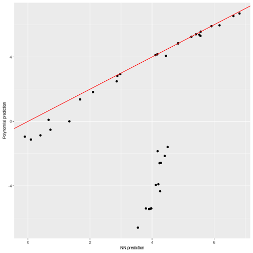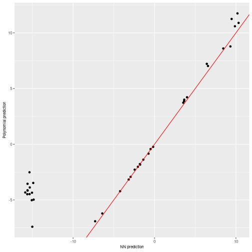
for (i in 1:3){
print(
plot_diagonal(x_axis = prediction_NN2[,i],
y_axis = prediction_poly_matrix2[i,],
xlab = "NN prediction",
ylab = "Polynomial prediction")
)
}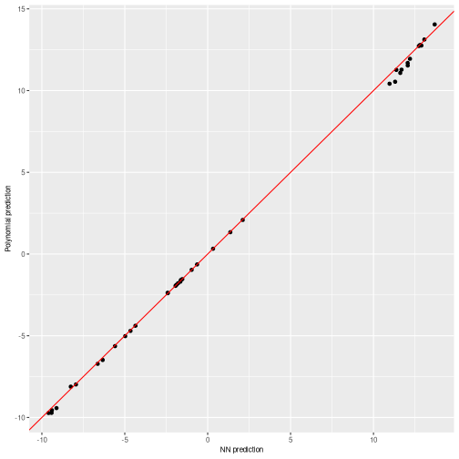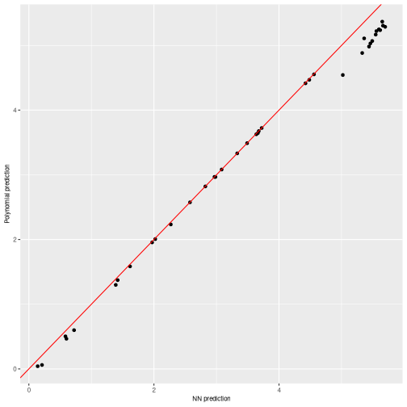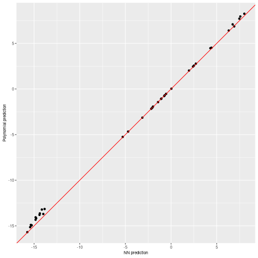
We can observe how both polynomials obtain quite similar predictions to their equivalent NN predictions, specially the second polynomial has a 100% accuracy. However, when comparing the linear outputs, the unconstrained NN presents some problems while the constrained one is quite accurate.
We can also plot the \(n\) most important coefficients in absolute value to compare which variables or interactions are more relevant in the polynomial. Note that, as data should be scaled to the \([-1,1]\) interval, interactions of order 2 or higher would usually need a higher absolute value than the lower order coefficients to be more relevant.
In this case, we will have 3 plots for each NN again, one per polynomial at each output neuron. In this case, the obtained coefficients will represent the most important variables when assigning the probability to be in each class.
We can see that the coefficients share some characteristics like
being positive or negative between the nn1and
nn2 interpretations, as expected by how their predictions
did not differ too much.
plot_n_important_coeffs(final_poly1, n_important_coeffs = 8)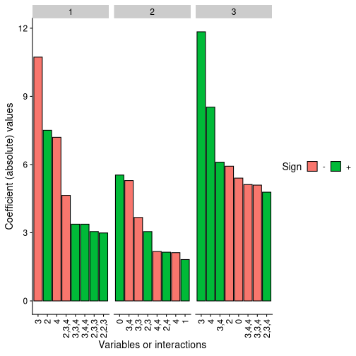
plot_n_important_coeffs(final_poly2, n_important_coeffs = 8)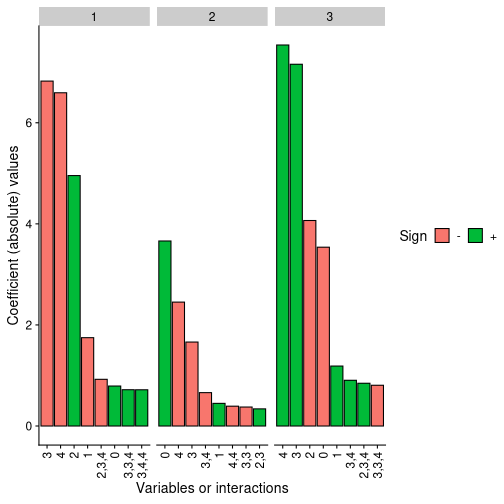
Finally, the problem with Taylor expansion can be checked with the following plot, where each layer is represented with their activation function, its Taylor expansion, the error and also the density of the activation potentials that the activation functions receives at that layer.
It can be clearly seen with the activation potentials density, in green, that it expands over a wide range in the unconstrained NN while the it is kept closer to zero in the constrained one, thus having a more accurate Taylor expansion around zero.
#Temporary parameter, should be removed or detected from object
my_max_norm1 <- list("no_constraints",1)
my_max_norm2 <- list("l1_norm",1)
plot_taylor_and_activation_potentials(object = nn1,
data = train,
q_taylor_vector = q_taylor_vector,
forced_max_Q = 3,
my_max_norm = my_max_norm1)
#> [[1]]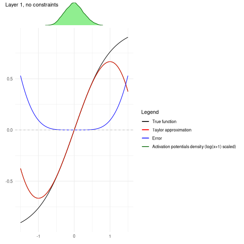
#>
#> [[2]]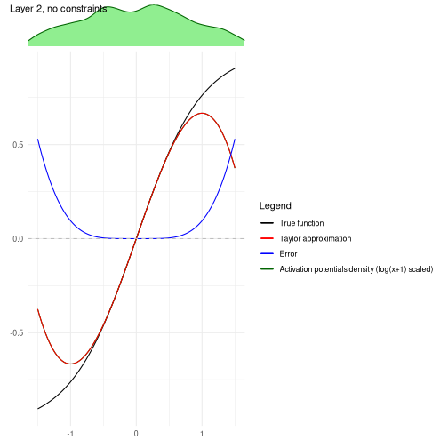
#>
#> [[3]]
plot_taylor_and_activation_potentials(object = nn2,
data = train,
q_taylor_vector = q_taylor_vector,
forced_max_Q = 3,
my_max_norm = my_max_norm2)
#> [[1]]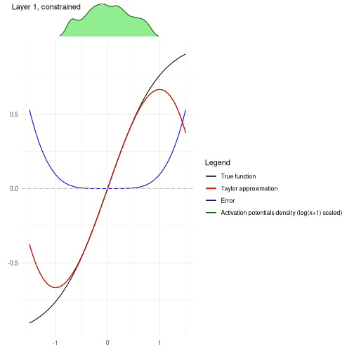
#>
#> [[2]]#>
#> [[3]]